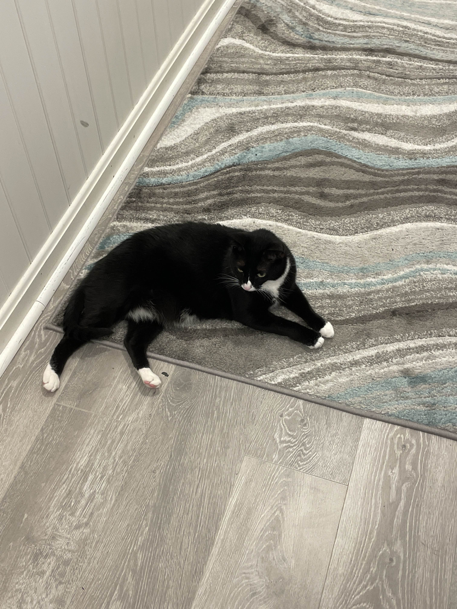
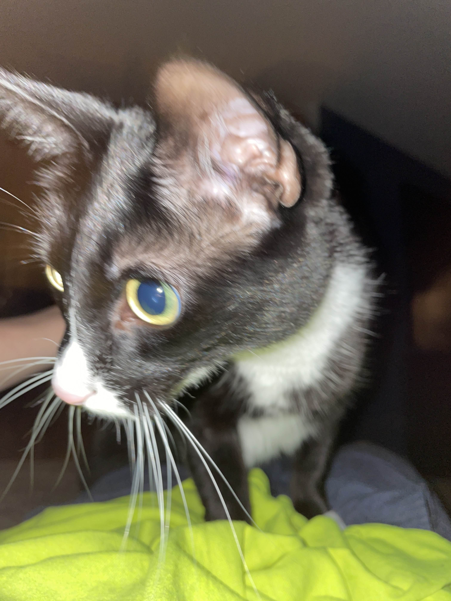
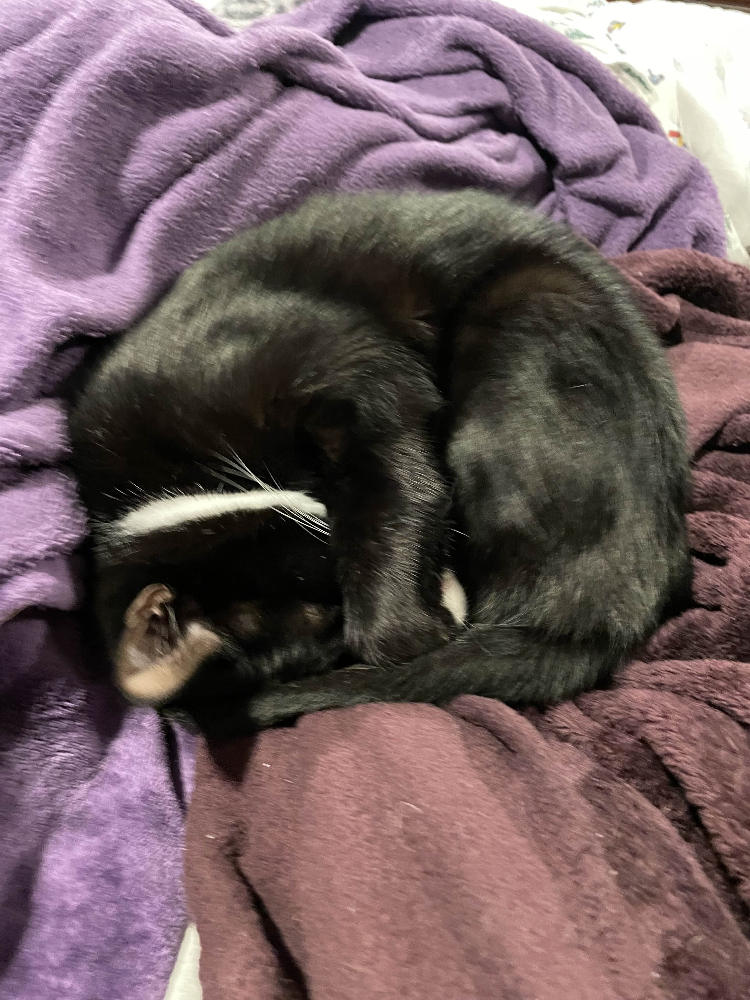

Cupid is considered the baby of the family. At just 3 years old, he is very energetic and playful compared to the other cats. He is always on high alert, with his big bug-eyes constantly scanning the room. He is quite skittish and as a result, despite having grown up in this home, is constantly getting scared by the everyday movements of people around the house (usually displayed through him bolting out of the room). Despite being the baby of the family, he is actually quite the chunky fellow.It's not easy to persuade Cupid to trust you, but when you finally do he is the most agressive lover you might ever meet. He very much enjoys to push his whole weight into you, and loves to burrow his face in your body. In many ways he is the opposite of Tigger. Where Tigger typically enjoys perching atop of people and not being directly snuggled, Cupid wants to be swaddled and loved like a baby. Furry and Cupid will groom each other often and even like to snuggle on occasion, but sometimes there is a mismatch in energy which can irritate Furry.
| LIKES | DISLIKES | TEMPERMENT |
|
|
|